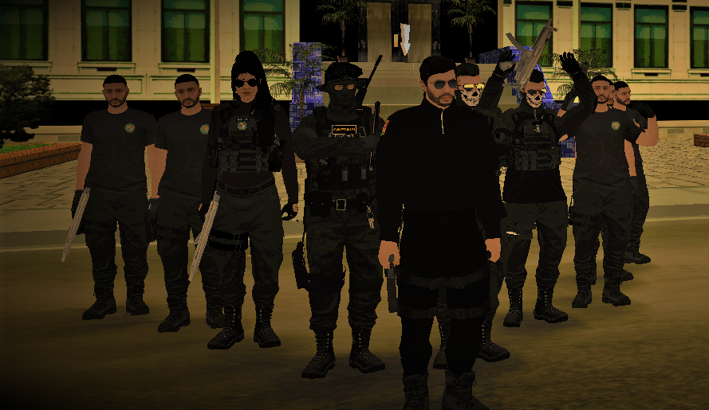
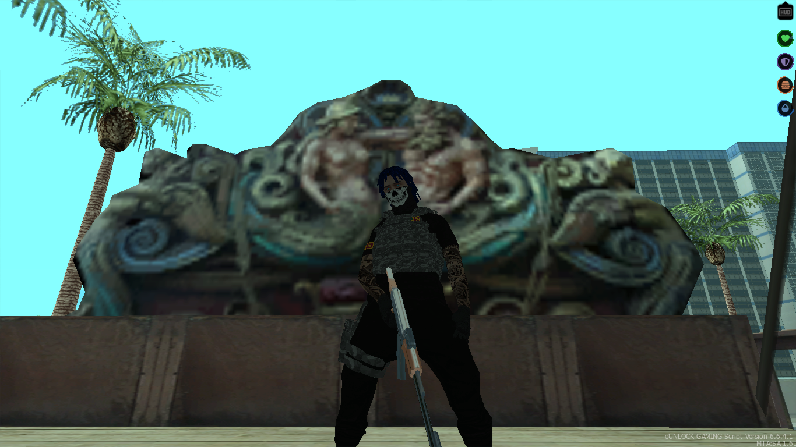
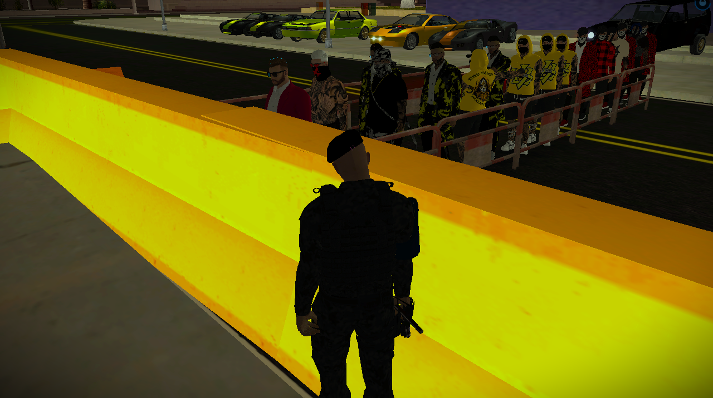

According to the badges on officers, the LSPD was established in 2022, nearly a hundred years after Los Santos was founded. Being a large police force, the LSPD appears to be well-funded and equipped, although unlike previous games, LSPD officers and cars very rarely appear on the streets of Los Santos.
For male officers, there are three character models: black, white, and Hispanic, but their facial features differ. While the black and white character model have dedicated voices (each having six voices), the Hispanic character model will have a random NPC voice (sometimes using a female NPC voice). Grand Theft Auto V is the first game in the series to also feature female officers; however, they are very rare. For them, there are only two character models: black and white, and each of them has their own voices.
The LSPD has jurisdiction over the entirety of Los Santos, as well as Del Perro, Davis, and Rockford Hills, despite those being different cities. They also have jurisdiction over Los Santos International Airport and the Port of Los Santos, despite their real-life counterparts having their own police departments (Los Angeles International Airport having the Los Angeles Airport Police and the Port of Los Angeles having the Los Angeles Port Police).
The only sure ways to find LSPD officers are at the LSIA, directly outside police stations, during pursuits of Street Criminals, or by dialing 911 in the in-game phone for the Police. Arrow stations also usually have an officer or two, particularly the underground ones. In Downtown Los Santos, foot patrols of two officers can be found within a two-block radius of the Mission Row Police Station, often interacting with the homeless that frequent the area. In other areas of Los Santos however, it is rare to find an occupied patrol car unless it is in pursuit of an NPC driver.

A chief of police (COP) is the title given to an appointed official or an elected one in the chain of command of a police department, particularly in North America. A chief of police may also be known as a police chief or sometimes just a chief, while some countries favour other titles such as commissioner or chief constable. A police chief is appointed by and answerable to a state or local government.
he precise role of a chief of police varies by country and sometimes within a country. The larger a police force or department, the more likely that some duties will be delegated to mid-ranked officers. The following list is a general sense of the actions and responsibilities held by any chief of police.
